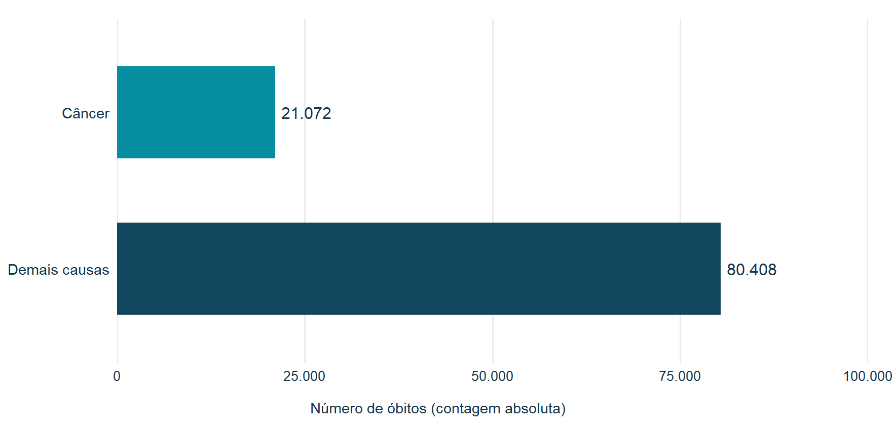

| Indicador | Registros |
|---|---|
| Registros processados — Brasil | 1.532.015 |
| Registros processados — RS | 101.480 |
| Óbitos por câncer — RS | 21.072 |
| Óbitos por demais causas — RS | 80.408 |
AcessaData-Health | Leitura científica
Exploração orientada dos resultados epidemiológicos — Rio Grande do Sul, 2024
NotaEscopo deste relatório
Este documento apresenta contagens agregadas de registros do Sistema de Informações sobre Mortalidade (SIM), 2024, para residentes no Rio Grande do Sul. As contagens apresentadas são números absolutos de óbitos; não são indicadores de incidência, prevalência ou taxas padronizadas de mortalidade.
A leitura utiliza o arquivo JSON analítico existente no projeto. Não reprocessa o CSV bruto do SIM e não substitui a auditoria do conjunto de dados original.
Fonte e validação das contagens
DicaReconciliação interna do resumo
A renderização exige que as somas de óbitos por sexo e por faixa etária coincidam com a contagem de óbitos por câncer informada no JSON. Divergências interrompem a geração do relatório, em vez de produzirem gráficos potencialmente inconsistentes.
Composição das causas de morte no RS
Visualização
Examinar código R
composicao <- data.frame(
Categoria = factor(c("Câncer", "Demais causas"),
levels = c("Demais causas", "Câncer")),
Obitos = c(cancer, demais)
)
# Corrige o problema visual: o rótulo é posicionado no centro do PLOT
# inteiro (incluindo a largura reservada aos nomes das categorias),
# em vez de ser alinhado somente ao painel interno do eixo X.
grafico <- ggplot(composicao, aes(x = Obitos, y = Categoria, fill = Categoria)) +
geom_col(width = 0.59, show.legend = FALSE) +
geom_text(aes(label = fmt(Obitos)), hjust = -0.12, size = 4.2,
color = "#18354A", show.legend = FALSE) +
scale_fill_manual(values = c("Demais causas" = "#10465E",
"Câncer" = "#078DA0")) +
scale_x_continuous(
breaks = seq(0, 100000, by = 25000),
labels = fmt,
limits = c(0, 100000),
expand = expansion(mult = c(0, 0))
) +
labs(
x = NULL,
y = NULL,
caption = "Número de óbitos (contagem absoluta)"
) +
theme_minimal(base_size = 12) +
theme(
panel.grid.major.y = element_blank(),
panel.grid.minor = element_blank(),
legend.position = "none",
axis.text.y = element_text(color = "#14354B", size = 11),
axis.text.x = element_text(color = "#14354B", size = 10),
plot.margin = margin(t = 14, r = 20, b = 8, l = 6),
plot.caption.position = "plot",
plot.caption = element_text(hjust = 0.5, size = 11,
color = "#14354B",
margin = margin(t = 14))
)
grafico
Tabela de apoio
| Categoria | Número de óbitos | Participação no total do RS (%) |
|---|---|---|
| Câncer | 21.072 | 20.76 |
| Demais causas | 80.408 | 79.24 |
Interpretação
Os registros classificados como câncer representam 20.76% do total de óbitos de residentes no RS contido neste resumo analítico. A participação é uma proporção de registros, não uma taxa de mortalidade populacional. O total das duas categorias corresponde aos 101.480 registros processados do RS.
Estratificações do estudo
| Sexo | Óbitos | Participação no total de câncer (%) |
|---|---|---|
| Masculino | 11.107 | 52.71 |
| Feminino | 9.965 | 47.29 |
| Faixa etária | Óbitos |
|---|---|
| 00–19 | 94 |
| 20–39 | 576 |
| 40–59 | 3.708 |
| 60–79 | 11.839 |
| 80+ | 4.855 |
| Código CID-10 | Óbitos |
|---|---|
| C34 | 3.609 |
| C18 | 1.596 |
| C50 | 1.433 |
| C25 | 1.389 |
| C61 | 1.283 |
| C22 | 924 |
| C15 | 857 |
| C16 | 856 |
| C71 | 717 |
| C67 | 518 |
Método e rastreabilidade
Etapas desta visualização
| Etapa | Procedimento |
|---|---|
| 1. Leitura | Carregamento do arquivo JSON local do projeto. |
| 2. Validação | Verificação de tipos, totais e concordância dos estratos. |
| 3. Cálculo | Cálculo de demais causas e percentuais com base nas contagens disponíveis. |
| 4. Visualização | Construção de gráficos e tabelas por R/ggplot2/knitr. |
Verificações desta renderização
| Verificação | Resultado |
|---|---|
| Óbitos por câncer não superam registros do RS | Conferido na renderização |
| Soma dos estratos por sexo | Conferido na renderização |
| Soma dos estratos por idade | Conferido na renderização |
| Dez códigos CID-10 distintos | Conferido na renderização |
AvisoLimitações e interpretação responsável
- As contagens são referentes a óbitos registrados, e não a novos casos de câncer.
- Não foram calculadas aqui taxas específicas ou padronizadas por população.
- Os resultados são descritivos e não demonstram causalidade.
- Este relatório consome um resumo agregado; não constitui reprocessamento nem auditoria independente da base bruta.
- As tabelas e figuras não equivalem automaticamente a uma tabulação oficial do TABNET.
| Escopo | Observação |
|---|---|
| Fonte | Arquivo JSON agregado derivado do estudo SIM/RS 2024. |
| Indicadores | Contagens absolutas e percentuais, sem padronização populacional. |
| Inferência | Não são feitas afirmações de causalidade ou inferência causal. |
| Reprodução | Resultados dependem dos dados JSON e versões locais dos pacotes R. |
Documentação complementar
Consulte a página de auditoria e documentação do AcessaData-Health no GitHub Pages. O conteúdo publicado ali é uma documentação complementar; os critérios e conjuntos analisados devem ser verificados individualmente antes de comparar resultados de diferentes fases do projeto.